МОДИФИКАЦИИ ПИД-РЕГУЛЯТОРОВ
Описанный в предыдущем разделе ПИД-регулятор и его частные случаи являются теоретическими идеализациями реальных регуляторов, поэтому для их практического воплощения необходимо учесть ограничения, накладываемые реальными условиями при менения и технической реализации. Кроме этого, наличие в ПИД-регуляторе всего лишь трёх регулируемых параметров (K, Ti, Td) в ряде случаев оказывается недостаточным для получения заданного качества регулирования, особенно для систем с большой транспортной задержкой L и для систем, в которых требуются одновременно высокое качество слежения за уставкой и высокое качество ослабления внешних возмущений.
Постоянно растущие требования рынка к качественным показателям ПИД-контроллеров инициируют появление множества новых модификаций ПИД-регуляторов.
Регулятор с весовыми коэффициентами при уставке
В классическом ПИД-регуляторе сигнал ошибки e равен разности между задающим воздействием r и выходной переменной объекта y: e = r – y. Однако качество регулирования можно улучшить, если ошибку вычислять отдельно для пропорциональной, дифференциальной и интегральной составляющих [5], (рис. 9):
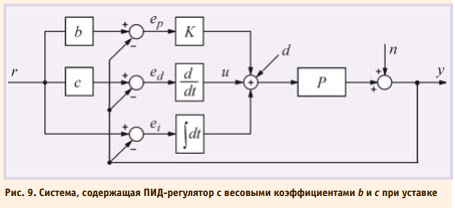
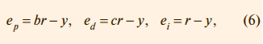
где ep, ed, ei – ошибки для пропорциональной, дифференциальной и интегральной составляющих соответственно; b, c – настроечные весовые коэффициенты.
Уравнение такого регулятора аналогично (1):
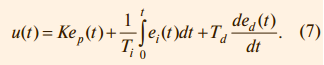
Отметим, что весовой коэффициент при интегральной составляющей отсутствует, что необходимо для обеспечения нулевой ошибки в установившемся режиме.
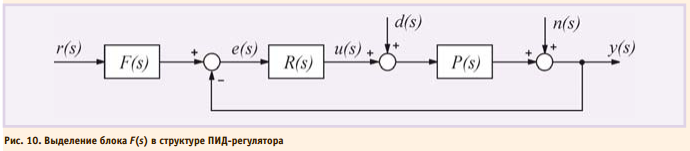
Можно доказать, что регулятор, представленный на рис. 9, полностью эквивалентен регулятору, показанному на рис. 10, если блок R(s) является классическим регулятором (4), а блок F(s) имеет передаточную функцию вида:
Структура полученного регулятора имеет замечательное свойство: блок F(s) не входит в контур регулирования. Это означает, что робастность, качество регулирования, реакция на шумы и внешние возмущения попрежнему будут определяться только параметрами K, Ti, Td, то есть параметры b и c блока F(s) настраиваются независимо от параметров K, Ti, Td.
Параметры b и c определяют вид АЧХ блока F(s) и позволяют улучшить качество реакции регулятора на изменение уставки r(t). На рис. 11 показана реакция замкнутой системы с описанным регулятором при разных значениях весовых коэффициентов b и c. Как видно из рисунка, изменение параметров b и c не влияет на отклик системы на шумы n(t) и внешние возмущения d(t).
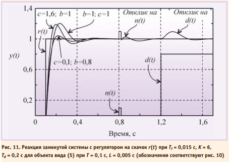
Коэффициент c часто выбирают равным нулю, чтобы избежать дифференцирования случайных резких выбросов в управляющем сигнале r(t), если они возможны.
Регулятор при b = 0 и c = 0 иногда на зывают И(ПД)-регулятором, а при b = 1 и c = 0 – ПИ(Д)-регулятором.
Регулятор с формирующим фильтром для сигнала уставки
Дальнейшим усовершенствованием регулятора со структурой, показанной на рис. 10, является применение фильтра в блоке F(s), передаточная функция которого приобретает вид:
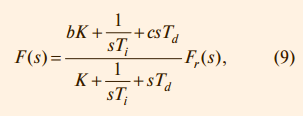
где
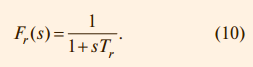
Здесь Tr – постоянная времени фильтра, которую выбирают равной
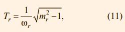
где mr – показатель колебательности системы без фильтра.
Пример реакции системы с регулятором, использующим формирующий фильтр, приведен на рис. 12.

Принцип разомкнутого управления в ПИД-регуляторах
Регулятор можно построить и без использования обратной связи. Если известны действующие на систему возмущения и желаемая реакция на изменение управляющего воздействия, то в некоторых случаях можно найти такую передаточную функцию регулятора, при которой получается желаемая реакция системы. Достоинством такогоподхода является высокая скорость реагирования системы на внешние возмущения, поскольку для выработки управляющего воздействия не нужно ждать, пока управляющий сигнал пройдёт через объект и возвратится в регулятор по цепи обратной связи. Кроме того, система с разомкнутым управлением в принципе не может быть неустойчивой, поскольку в ней отсутствует обратная связь.
Недостатком является невозможность получить высокую точность при неизвестных возмущениях и низкой точности модели объекта, а также не возможность полной компенсации возмущений для объектов с транспортной задержкой и проблема физической реализуемости обратных операторов (см. раздел «Нахождение обратной динамики объекта»).
В зарубежной литературе системы с разомкнутым управлением называют системами с прямой связью. Термин «прямая связь» выбран для того, чтобы подчеркнуть отличие этого метода от метода обратной связи. Далее оба термина будут использованы как синонимы.
Достоинства разомкнутого и замкнутого управления можно объединить в одном регуляторе. Наилучшие характеристики системы получаются, если её проектировать по принципу разомкнутого управления, а обратную связь использовать только для дальнейшей минимизации погрешности системы.
В предыдущем разделе был рассмотрен частный случай применения прямой связи (рис. 10), которая реализована с помощью блока F(s).
Основным принципом применения разомкнутого управления в ПИД-регуляторах является разделение задачи проектирования на две части. Первая часть – обеспечение робастности и ослабления влияния шумов и внешних возмущений – решается с помощью параметров K, Ti, Td. Вторая часть —обеспечение заданной реакции на управляющее воздействие r(t) – решается с помощью параметров регулятора с прямой связью. Регуляторы, обеспечивающие возможность независимого решения этих двух задач, называют регуляторами с двумя степенями свободы, и на их условном изображении присутствуют два входа (рис. 13), [9].
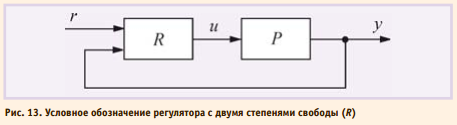
Структура ПИДрегулятора, использующего принцип разомкнутого управления, показана на рис. 14. Здесь регулятор R спроектирован, как в системе с классическим ПИДрегулятором, а передаточные функции блоков Mu и My выбираются так, чтобы улучшить реакцию системы на входное воздействие r(t).
Принцип действия такой системы состоит в следующем. Изменение сигнала r(t) поступает на вход объекта управления u через блок Mu, минуяцепь обратной связи. Передаточная функция блока Mu выбирается таким образом, чтобы выходной сигнал системы y(t) в точности соответствовал входному сигналу y(t) = r(t), то есть чтобы сигнал ошибки e(t) был равен нулю. Поскольку в реальной системе при воздействии внешних возмущений или изменении уставки e(t) ≠ 0, то во время переходного процесса вступает в действие обычный ПИД-регулятор R,
который с помощью обратной связи пытается свести появившуюся ошибку к нулю.
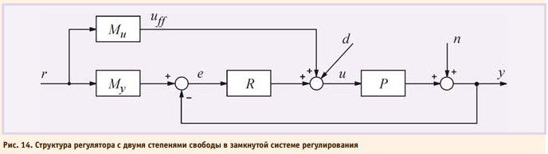
Непосредственно по рис. 14 можно записать передаточную функцию системы от входа r на её выход y в виде:
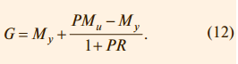
Здесь первый член выбирают, как следует из описанного ранее принципа действия системы, так, чтобы в идеальных условиях e = 0 и Myr = y, то есть желаемой передаточной функцией системы является G = My. Поэтому второй член в (12) необходимо сделать равным нулю. Этого можно достичь двумя способами. Первый из них состоит в том, чтобы сделать бесконечно большим петлевое усиление PR. Чаще используют второй путь, который состоит в выборе такой передаточной функции Mu, чтобы выполнялось соотношение PM u – My = 0, то есть
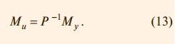
Таким образом, в отличие от регулятора с обратной связью, у которого точность обеспечивается благодаря делению сигнала ошибки на большое число (усиление интегратора), в регуляторах с прямой связью точность обеспечивается путём компенсации ошибки, то есть с помощью операции вычитания.
Поскольку в системе, показанной на рис. 14, ошибка на низких частотах и в установившемся режиме равна нулю благодаря интегральному члену в ПИД-регуляторе R, высокую точность компенсации ошибки с помощью прямой связи достаточно обеспечить только на высоких частотах. Это облегчает задачу синтеза передаточной
функции Mu.
Нахождение обратной динамики объекта
Как следует из (13), для нахождения передаточной функции Mu необходимо найти обратный оператор P –1(s). Благодаря алгебраической форме изображений операторов по Лапласу, формально сделать это достаточно просто. Например, для объекта с передаточной функцией:
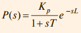
обратный оператор будет равен:
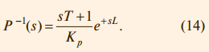
Однако такие операции наталкиваются на проблему физической реализуемости. Выражение (14) содержит член e +sL, который является обратным по отношению к идеальной задержке, то есть является изображением операции идеального предсказания. Кроме того, для реализации (14) необходима операция идеального дифференцирования, реализация которой также достаточно проблематична. Поэтому задача синтеза регулятора с прямой связью является задачей аппроксимации нереализуемой передаточной функции искусственно выбранной реализуемой функцией по критерию минимума погрешности.
Регулятор с передаточной функцией объекта
В очень простом частном случае для систем с монотонным откликом на ступенчатое воздействие вид переда точной функции My(s) можно выбрать совпадающим с нормированной передаточной функцией объекта:
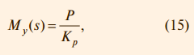
где Kp = P(0). Тогда в соответствии с (13):
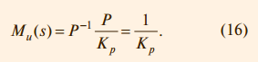
Недостатком такого подхода является медленная реакция замкнутой системы на изменение задающего воздействия. Достоинством является отсутствие какихлибо расчётов и настроек для гарантированного получения отклика без перерегулирования (рис. 15). Следует, однако, помнить, что отклик замкнутой системы на задающее воздействие никак не связан с откликом на внешние возмущения и шум, поэтому настройка регулятора должна быть выполнена обычными методами.
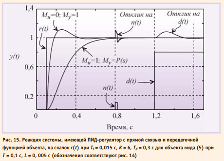
Импульсное управление без обратной связи
Ещё одна модификация принципа разомкнутого управления состоит в том, что перед подачей сигнала уставки на вход объекта подают прямоугольный импульс большой амплитуды (рис. 16). Поскольку скорость нарастания реакции на прямоугольный импульс пропорциональна его амплитуде, длительность переходного процесса можно существенно уменьшить по сравнению со случаем, когда сигнал уставки подаётся в форме одиночного скачка (рис. 16).
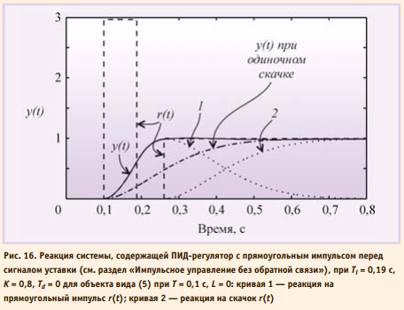
Реакция на прямоугольный импульс состоит из фазы нарастания сигнала и фазы спада. Амплитуду импульса выбирают максимально возможной. Обычно она ограничивается мощностью исполнительных устройств системы. Длительность импульса выбирают такой, чтобы максимум реакции на импульс был равен значению уставки (единице при уставке в форме единичного ступенчатого воздействия). Задержку подачи ступенчатого воздействия выбирают так, чтобы она совпала с моментом появления максимума отклика на прямоугольный импульс.
В данном методе время выхода системы на режим может быть сделано как угодно малым, если использовать импульс достаточно большой амплитуды. В общем случае перед подачей ступенчатого воздействия можно подавать несколько импульсов разной амплитуды и длительности. Параметры импульсов и ступенчатого воздействия выбирают, решая численными методами задачу оптимизации по критерию минимизации погрешности отклонения отклика системы от требуемой формы. Для линейных систем параметры, полученные при оптимизации, остаются без изменений для любых значений уставки, если амплитуду прямоугольного импульса изменять пропорционально значению уставки.
Компенсация внешних возмущений с помощью прямой связи
Если внешние возмущения, воздействующие на объект управления, можно измерять до того, как они пройдут на выход системы y, то их влияние можно существенно ослабить с помощью прямой связи. Прямая связь позволяет скомпенсировать погрешность быстрее, чем обратная связь обнаружит ошибку как разность между управляемой величиной и управляющим воздействием.
Ранее мы предполагали, что внешние возмущения приложены ко входу системы. Такое допущение было справедливо при качественном анализе степени подавления возмущений с помощью обратной связи. Однако для компенсации возмущений необходимо идентифицировать передаточную функцию от точки приложения возмущений к выходу системы Pd(s). При этом объект управления приобретает второй вход (вход возмущений) и описывается функцией с двумя аргумента ми u(s) и d(s):
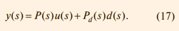
Одним из вариантов компенсации члена Pd(s) d(s) является использова ние принципа прямой связи (разомкнутого управления), как показано на рис. 17. Здесь Fd (s) – передаточная функция регулятора с прямой связью. Уравнение полученной системы можно записать непосредственно по рис. 17 с учётом (17):
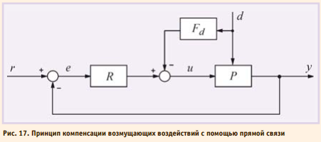
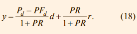
Отсюда следует, что уменьшить влияние внешних возмущений можно двумя способами: увеличивая петлевое усиление контура с обратной связью PR или выбрав Pd – PFd = 0, то есть

Обращение динамического оператора здесь сопряжено с проблемами, описанными в разделе «Нахождение обратной динамики объекта». В ряде практических случаев бывает достаточно считать, что оператор P–1(s) = Pd –1(0) статический, и это существенно упрощает его нахождение.
В частном случае, когда точка приложения возмущения совпадает со входом объекта (как на рис. 3), выражение (17) упрощается до y(s) = P(s) (u(s) + d(s)), и из (19) получим Fd(s) = 1.
Метод прямой связи позволяет скомпенсировать возмущение до того, как оно пройдёт через объект. Это существенно увеличивает общее быстродействие системы и исключает её по тенциальную неустойчивость.
Примером применения описанного метода является компенсация влияния погодных условий на промышленную теплицу. Для компенсации влияния температуры наружного воздуха, скорости ветра, осадков необходимо установить снаружи теплицы соответствующие датчики и выполнить идентификацию передаточной функции от каждого датчика до точки измерения температуры внутри теплицы, затем найти обратный оператор (19) и включить его в структуру регулятора.
Правильно настроенный контроллер с прямой и обратной связью позволяет ослабить влияние нагрузки на управляемую переменную до 10 раз (www.protuner.com, Application manual).
Недостатками метода являются невозможность достаточно точной идентификации возмущения и точки его приложения к объекту, поскольку точки распределены в пространстве, а так же наличие проблемы, связанной с нахождением обратного оператора (см. раздел «Нахождение обратной динамики объекта»).
Окончание следует...